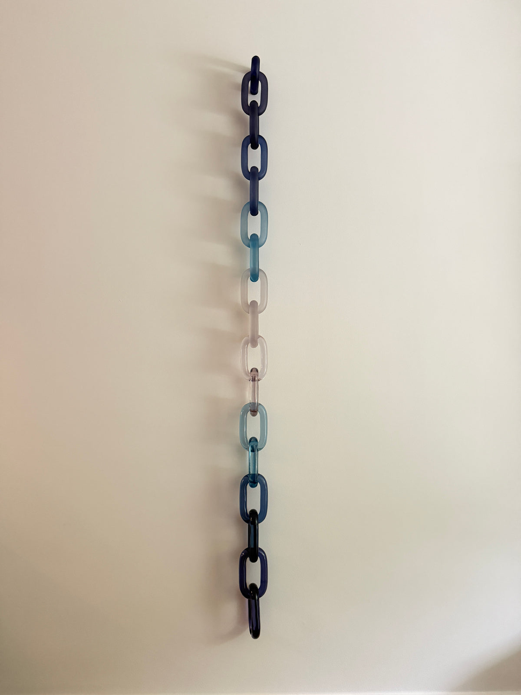
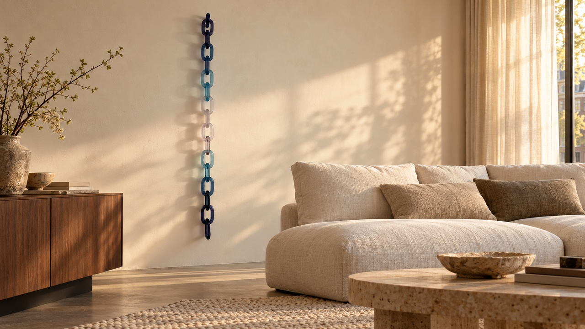
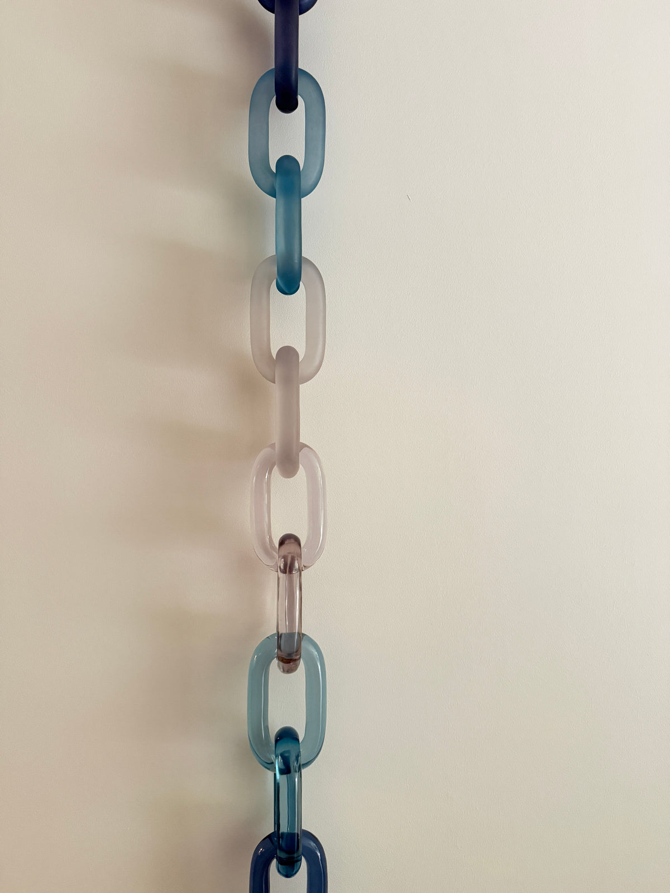
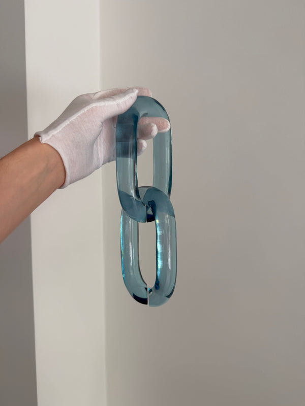
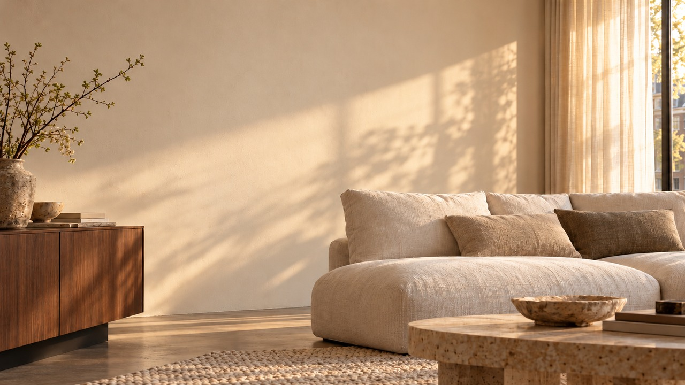

HANDMADE ACRYLIC WALL ART
AMSTERDAM, WITH A DIFFERENT PERSPECTIVE
Art, in
connection.
Sculptural acrylic links.
Made by hand. Composed by you.
01 / BLUE FADE
THE ART OF COMING TOGETHER01 — 05
One link.
Endless possibilities.
BRISÉNN creates handmade, modular acrylic wall art. Connect colour, finish and form to make a piece that belongs to your space—and only your space.
See how it comes together ↓CRAFTED TO CONNECT
THE CONNECTION · 02Small gesture.
Small gesture.
Infinite expression.
Individual links become something more. Choose your colours. Connect your composition. Make it personal.
01Mix the colours.
02Make the connection.
03Find your expression.
SCROLL TO CONNECT ↓
THE COLLECTION · 03Meet
Meet
Blue Fade.
A rhythm of midnight blue, blue and clear.
Polished light. Soft matte.
Sixteen links, one complete expression.


Presence,
without excess.
Composition16 acrylic links
LengthApprox. 189 cm
From€379.99
A STUDY IN LIGHTTouch the colour.
Touch the colour.
Feel the difference.

One material.
Two ways to catch the light.

Polished acrylic lets the light through. A matte finish softens it. Put them together and the familiar becomes something unexpected.
Explore the finishes ↗THE FINISHING TOUCH · 04A room.
A room.
Then, a feeling.
Some things change the whole room.
Drag to discover the difference.

↔
BEFOREWITH BRISÉNN
BLUE FADE — A STUDY IN CONNECTIONTry your own space ↗
THE INTERACTIVE STUDIO
Make it
entirely yours.
Turn it. Change it. Find your colour.
A composition with your signature.
BLUE FADE · CURATED SET
≈ 189 cm chain length
Drag to rotate · click a link to edit
Illustrative 3D geometry & colour. Refer to physical samples for final appearance.
THE SIZE CALCULATOR
How much space do you have?
For one straight hanging chain. Curved arrangements have a different installed span.
cm
16 links≈ 189 cm
Length estimate: 16.5 cm for the first link + 11.5 cm for each additional link. Handmade pieces and hanging geometry vary. Prices are an EUR snapshot from 27 October 2026; final price, delivery and mounting suitability are confirmed by BRISÉNN.
YOUR OWN PERSPECTIVE
Now imagine
your room.
The same composition. A different perspective.
Upload your room, set a scale, find its place.
STYLE PREVIEW · SCALE NOT CALIBRATED
Your composition, in context.